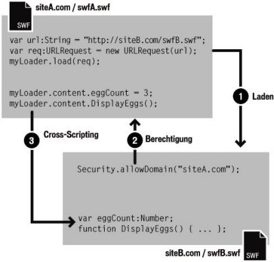

| Paket | flash.system |
| Klasse | public final class Security |
| Vererbung | Security |
| Sprachversion: | ActionScript 3.0 |
| Laufzeitversionen: | AIR 1.0, Flash Player 9, Flash Lite 4 |
 Vererbte öffentliche Eigenschaften ausblenden
Vererbte öffentliche Eigenschaften ausblenden Vererbte öffentliche Eigenschaften anzeigen
Vererbte öffentliche Eigenschaften anzeigen| Eigenschaft | Definiert von | ||
|---|---|---|---|
 | constructor : Object
Ein Verweis auf das Klassenobjekt oder die Konstruktorfunktion für eine angegebene Objektinstanz. | Object | |
| exactSettings : Boolean [statisch]
Legt fest, wie in Flash Player oder AIR die für bestimmte Inhalteinstellungen, beispielsweise Berechtigungen für Kamera und Mikrofon, Speicheranteile oder Speicher für permanente gemeinsame Objekte, zu verwendende Domäne ausgewählt wird. | Security | ||
| pageDomain : String [statisch] [schreibgeschützt]
Der Domänenteil der HTML-Seite, die die SWF-Datei enthält. | Security | ||
| sandboxType : String [statisch] [schreibgeschützt]
Gibt den Typ der Sicherheitssandbox an, in der die aufrufende Datei verwendet wird. | Security | ||
| Methode | Definiert von | ||
|---|---|---|---|
[statisch]
Lässt SWF-Dateien in den identifizierten Domänen auf Objekte und Variablen in der SWF-Datei zugreifen, die den allowDomain()-Aufruf enthalten. | Security | ||
[statisch]
Hiermit können SWF- und HTML-Dateien in den angegebenen Domänen auf Objekte und Variablen in der aufrufenden SWF-Datei zugreifen, die über das HTTPS-Protokoll gehostet wird. | Security | ||
|
Gibt an, ob für ein Objekt eine bestimmte Eigenschaft definiert wurde. | Object | |
|
Gibt an, ob eine Instanz der Object-Klasse in der Prototypkette des Objekts vorhanden ist, das als Parameter angegeben wurde. | Object | |
[statisch]
Sucht an dem durch den url-Parameter angegebenen Ort nach einer Richtliniendatei. | Security | ||
|
Gibt an, ob die angegebene Eigenschaft vorhanden ist und durchlaufen werden kann. | Object | |
|
Legt die Verfügbarkeit einer dynamischen Eigenschaft für Schleifenoperationen fest. | Object | |
[statisch]
Zeigt das Bedienfeld für die Sicherheitseinstellungen in Flash Player an. | Security | ||
|
Gibt die Stringdarstellung dieses Objekts zurück, formatiert entsprechend den Konventionen des Gebietsschemas. | Object | |
|
Gibt das angegebene Objekt als String zurück. | Object | |
|
Gibt den Grundwert des angegebenen Objekts zurück. | Object | |
| Konstante | Definiert von | ||
|---|---|---|---|
| APPLICATION : String = "application" [statisch]
Die Datei wird in einer AIR-Anwendung ausgeführt und sie wurde mit dem Paket (der AIR-Datei) für diese Anwendung installiert. | Security | ||
| LOCAL_TRUSTED : String = "localTrusted" [statisch]
Die Datei ist eine lokale Datei, die vom Benutzer über den Flash Player-Einstellungsmanager oder eine FlashPlayerTrust-Konfigurationsdatei als vertrauenswürdig eingestuft wurde. | Security | ||
| LOCAL_WITH_FILE : String = "localWithFile" [statisch]
Die Datei ist eine lokale Datei, wurde vom Benutzer nicht als vertrauenswürdig einstuft, und es handelt sich nicht um eine SWF-Datei, die mit einem Netzwerkziel veröffentlicht wurde. | Security | ||
| LOCAL_WITH_NETWORK : String = "localWithNetwork" [statisch]
Die Datei ist eine lokale Datei, wurde vom Benutzer nicht als vertrauenswürdig einstuft, und es handelt sich um eine SWF-Datei, die mit einem Netzwerkziel veröffentlicht wurde. | Security | ||
| REMOTE : String = "remote" [statisch]
Die Datei stammt von einer Internet-URL und kann entsprechend den domänenbasierten Sandbox-Regeln verwendet werden. | Security | ||
exactSettings | Eigenschaft |
exactSettings:Boolean| Sprachversion: | ActionScript 3.0 |
| Laufzeitversionen: | AIR 1.0, Flash Player 9, Flash Lite 4 |
Legt fest, wie in Flash Player oder AIR die für bestimmte Inhalteinstellungen, beispielsweise Berechtigungen für Kamera und Mikrofon, Speicheranteile oder Speicher für permanente gemeinsame Objekte, zu verwendende Domäne ausgewählt wird. Um in der SWF-Datei die gleichen Einstellungen zu verwenden, die in Flash Player 6 verwendet wurden, setzen Sie exactSettings auf false.
In Flash Player 6 basiert die für diese Player-Einstellungen verwendete Domäne auf dem der Domäne der SWF-Datei nachgestellten Teil. Wenn die Domäne einer SWF-Datei mehr als zwei Segmente enthält, beispielsweise www.example.com, wird das erste Segment der Domäne („www“) entfernt und der restliche Teil der Domäne verwendet, d. h. example.com. In Flash Player 6 wird daher bei www.example.com und bei store.example.com die Domäne example.com als Domäne für diese Einstellungen verwendet. Genauso wird bei www.example.co.uk und store.example.co.uk die Domäne example.co.uk als Domäne für diese Einstellungen verwendet. In Flash Player 7 und späteren Versionen werden Player-Einstellungen in der Standardeinstellung entsprechend der exakten Domäne einer SWF-Datei ausgewählt. Beispiel: Eine SWF-Datei von www.example.com verwendet die Player-Einstellungen für www.example.com und eine SWF-Datei von store.example.com für store.example.com.
Wenn Security.exactSettings auf true gesetzt ist, verwendet Flash Player oder AIR exakte Domänen für Player-Einstellungen. Der Standardwert für exactSettings ist true. Wenn Sie für exactSettings einen anderen Wert als den Standardwert festlegen, tun Sie dies, bevor Ereignisse auftreten, bei denen Flash Player oder AIR Player-Einstellungen wählen muss (z. B. beim Verwenden einer Kamera oder eines Mikrofons oder beim Abrufen eines permanenten gemeinsamen Objekts).
Wenn Sie zuvor eine SWF-Datei in Version 6 veröffentlicht und daraus permanente gemeinsame Objekte erstellt haben und jetzt diese permanenten gemeinsamen Objekt aus der SWF-Datei, die Sie auf Version 7 oder höher portiert haben, abrufen müssen, setzen Sie Security.exactSettings auf false, bevor Sie SharedObject.getLocal() aufrufen.
Implementierung
public static function get exactSettings():Boolean public static function set exactSettings(value:Boolean):voidAuslöser
SecurityError — Der Wert von exactSettings wurde in Flash Player oder AIR bereits mindestens einmal bei einer Entscheidung hinsichtlich der Player-Einstellungen verwendet.
|
pageDomain | Eigenschaft |
pageDomain:String [schreibgeschützt] | Sprachversion: | ActionScript 3.0 |
| Laufzeitversionen: | Flash Player 10.3, AIR 2.7 |
Der Domänenteil der HTML-Seite, die die SWF-Datei enthält.
Aus Sicherheitsgründen gibt die Methode nicht die vollständige URL zurück, sondern nur die Seitendomäne, zum Beispiel http://www.example.com. Wenn diese SWF-Datei nicht in einer HTML-Seite enthalten ist oder aus Sicherheitsgründen nicht auf die Seitendomäne zugreifen kann, gibt diese Eigenschaft den String undefined zurück.
Implementierung
public static function get pageDomain():StringsandboxType | Eigenschaft |
sandboxType:String [schreibgeschützt] | Sprachversion: | ActionScript 3.0 |
| Laufzeitversionen: | AIR 1.0, Flash Player 9, Flash Lite 4 |
Gibt den Typ der Sicherheitssandbox an, in der die aufrufende Datei verwendet wird.
Security.sandboxType weist einen der folgenden Werte auf:
remote(Security.REMOTE): Diese Datei stammt von einer Internet-URL und kann entsprechend den domänenbasierten Sandbox-Regeln verwendet werden.localWithFile(Security.LOCAL_WITH_FILE): Diese Datei ist eine lokale Datei, wurde vom Benutzer nicht als vertrauenswürdig einstuft, und es handelt sich nicht um eine SWF-Datei, die mit einem Netzwerkziel veröffentlicht wurde. Die Datei kann lokale Datenquellen lesen, jedoch keine Verbindung mit dem Internet herstellen.localWithNetwork(Security.LOCAL_WITH_NETWORK): Diese SWF-Datei ist eine lokale Datei, die für den Benutzer nicht vertrauenswürdig ist und für die Verwendung im Netzwerk veröffentlicht wurde. Die SWF-Datei kann eine Verbindung mit dem Internet herstellen, jedoch keine lokalen Datenquellen lesen.localTrusted(Security.LOCAL_TRUSTED): Diese Datei ist eine lokale Datei, die für den Benutzer über den Flash Player-Einstellungsmanager oder eine FlashPlayerTrust-Konfigurationsdatei als vertrauenswürdig gekennzeichnet wurde. Die Datei kann lokale Datenquellen lesen und eine Verbindung mit dem Internet herstellen.application(Security.APPLICATION): Die Datei wird in einer AIR-Anwendung ausgeführt, und sie wurde mit dem Paket (der AIR-Datei) für diese Anwendung installiert. Standardmäßig können Dateien in der Sandbox der AIR-Anwendung Cross-Skripting für jede Datei in jeder Domäne durchführen (während Dateien außerhalb der AIR-Anwendung u. U. kein Cross-Skripting für die AIR-Datei durchführen dürfen). Standardmäßig können Dateien in der Sandbox der AIR-Anwendung Inhalte und Daten aus einer beliebigen Domäne laden.
Weitere Informationen zum Thema Sicherheit finden Sie im Flash Player Developer Center im Abschnitt Sicherheit.
Implementierung
public static function get sandboxType():StringVerwandte API-Elemente
allowDomain | () | Methode |
public static function allowDomain(... domains):void| Sprachversion: | ActionScript 3.0 |
| Laufzeitversionen: | AIR 1.0, Flash Player 9, Flash Lite 4 |
Lässt SWF-Dateien in den identifizierten Domänen auf Objekte und Variablen in der SWF-Datei zugreifen, die den allowDomain()-Aufruf enthalten.
Hinweis: Der Aufruf dieser Methode vom Code in der Sandbox der AIR-Anwendung verursacht eine SecurityError-Ausnahme. Inhalt außerhalb der Sicherheitsdomäne der Anwendung kann kein direktes Cross-Scripting für Inhalte in der Anwendungssandbox ausführen. Allerdings kann Inhalt außerhalb der Anwendungssandbox über eine Sandbox-Brücke mit Inhalt in der Sicherheitssandbox der Anwendung kommunizieren.
Wenn zwei SWF-Dateien von derselben Domäne aus bereitgestellt werden, z. B. von http://mysite.com/swfA.swf und http://mysite.com/swfB.swf, kann swfA.swf Variablen, Objekte, Eigenschaften, Methoden usw. in swfB.swf untersuchen und ändern, und swfB.swf kann dasselbe bei swfA.swf tun. Dies wird als Skripterstellung über mehrere Filme oder Cross-Scripting bezeichnet.
Wenn zwei SWF-Dateien über verschiedene Domänen bereitgestellt werden, beispielsweise http://siteA.com/swfA.swf und http://siteB.com/siteB.swf, kann swfA.swf in Flash Player keine Skripterstellung von swfB.swf durchführen und umgekehrt. Eine SWF-Datei erteilt SWF-Dateien von anderen Domänen Berechtigungen durch Aufrufen von Security.allowDomain(). Dies wird als Cross-Domain-Scripting bezeichnet. Durch Aufrufen von Security.allowDomain("siteA.com") erteilt siteB.swf der Datei siteA.swf die Berechtigung zur Skripterstellung.
In domänenübergreifenden Situationen ist es wichtig, die betreffenden beiden Seiten klar zu trennen. Im Folgenden wird die Seite, die das Cross-Scripting durchführt, als zugreifende Seite (in der Regel die zugreifende SWF-Datei) und die andere Seite als Seite, auf die zugegriffen wird (in der Regel die SWF-Datei, auf die zugegriffen wird), bezeichnet. Wenn siteA.swf die Skripterstellung von siteB.swf durchführt, handelt es sich bei siteA.swf um die zugreifende Seite und bei siteB.swf um die Seite, auf die zugegriffen wird.

Mit allowDomain() hergestellte Cross-Domain-Berechtigungen sind asymmetrisch. Im vorherigen Beispiel kann siteA.swf die Skripterstellung von siteB.swf durchführen, siteB.swf jedoch keine Skripterstellung von siteA.swf, da siteA.swf nicht allowDomain() aufgerufen hat, um SWF-Dateien auf siteB.com die Berechtigung zur Skripterstellung zu erteilen. Sie können jedoch symmetrische Berechtigungen einrichten, indem Sie allowDomain() aus beiden SWF-Dateien aufrufen.
Flash Player schützt SWF-Dateien nicht nur vor Cross-Domain-Scripting durch andere SWF-Dateien, sondern auch vor Cross-Domain-Scripting durch HTML-Dateien. HTML-für-SWF-Skripterstellung kann bei älteren Browserfunktionen wie z. B. SetVariable oder bei Callbacks über ExternalInterface.addCallback() auftreten. Bei domänenübergreifender HTML-für-SWF-Skripterstellung muss die SWF-Datei, auf die zugegriffen wird, allowDomain() genauso aufrufen, als ob es sich bei der zugreifenden Seite um eine SWF-Datei handelt, andernfalls schlägt der Vorgang fehl.
Die Angabe einer IP-Adresse als Argument für allowDomain() gestattet keinen Zugriff durch alle zugreifenden Seiten, die von der angegebenen IP-Adresse stammen. Stattdessen erhält hierdurch nur eine Seite Zugriff, die in der URL die angegebene IP-Adresse und nicht den Domänennamen enthält, der dieser IP-Adresse zugeordnet ist.
Versionsspezifische Unterschiede
Die domänenübergreifenden Sicherheitsregeln von Flash Player wurden von Version zu Version weiterentwickelt. Die Unterschiede sind in der folgenden Tabelle zusammengefasst.
| Aktuellste am Cross-Scripting beteiligte SWF-Version | allowDomain() erforderlich? | allowInsecureDomain() erforderlich? | Welche SWF-Datei muss allowDomain() oder allowInsecureDomain() aufrufen? | Was kann in allowDomain() bzw. allowInsecureDomain() angegeben werden? |
|---|---|---|---|---|
| 5 oder frühere Version | Nein | Nein | n. zutr. | n. zutr. |
| 6 | Ja, wenn übergeordnete Domänen nicht übereinstimmen. | Nein | Die SWF-Datei, auf die zugegriffen wird, oder jede SWF-Datei mit der gleichen Superdomäne wie die SWF-Datei, auf die zugegriffen wird. |
|
| 7 | Ja, wenn Domänen nicht exakt übereinstimmen. | Ja, wenn Zugriff von HTTP auf HTTPS stattfindet (auch wenn die Domänen exakt übereinstimmen) | Die SWF-Datei, auf die zugegriffen wird, oder jede SWF-Datei mit der gleichen Domäne wie die SWF-Datei, auf die zugegriffen wird. |
|
| 8 oder spätere Version | Ja, wenn Domänen nicht exakt übereinstimmen. | Ja, wenn Zugriff von HTTP auf HTTPS stattfindet (auch wenn die Domänen exakt übereinstimmen) | SWF-Datei, auf die zugegriffen wird |
|
Die Versionen, die das Verhalten von Flash Player steuern, sind SWF-Versionen (Veröffentlichungsversionen einer SWF), nicht die Version von Flash Player selbst. Beispiel: Wenn Flash Player 8 eine SWF wiedergibt, die für Version 7 veröffentlicht wurde, wendet Flash Player das Verhalten von Version 7 an. Hierdurch wird sichergestellt, dass Upgrades des Players keinen Einfluss auf das Verhalten von Security.allowDomain() in bereitgestellten SWF-Dateien haben.
Die Spalte „Version“ in der vorherigen Tabelle gibt jeweils die neueste SWF-Version an, die an einem Cross-Scripting-Vorgang beteiligt ist. Flash Player bestimmt das Verhalten entweder aufgrund der Version der zugreifenden SWF-Datei oder der Version der SWF-Datei, auf die zugegriffen wird, je nachdem, welche der beiden Versionen neuer ist.
Die folgenden Absätze enthalten weitere Informationen zu den Sicherheitsänderungen in Flash Player mit Bezug auf Security.allowDomain().
Version 5. Beim Cross-Domain-Scripting liegen keine Beschränkungen vor.
Version 6. Einführung der Cross-Domain-Scripting-Sicherheit. Standardmäßig verbietet Flash Player das Cross-Domain-Scripting. Mit Security.allowDomain() kann es jedoch zugelassen werden. Um festzustellen, ob sich zwei Dateien in derselben Domäne befinden, verwendet Flash Player die Superdomäne der jeweiligen Datei. Diese entspricht exakt dem Hostnamen aus der URL der Datei, minus dem ersten Segment, bis zu einem Minimum von zwei Segmenten. Beispiel: Die Superdomäne www.mysite.com lautet einfach mysite.com. In diesem Fall könnten SWF-Dateien sowohl von www.mysite.com als auch von store.mysite.com Skripten füreinander erstellen, ohne Security.allowDomain() aufzurufen.
Version 7. Superdomänen-Übereinstimmung wird durch exakte Domänenübereinstimmung ersetzt. Zwei Dateien haben aufeinander nur dann Skriptzugriff, wenn die Hostnamen in ihren URLs identisch sind. Andernfalls ist ein Aufruf von Security.allowDomain() erforderlich. In der Standardeinstellung haben Dateien, die aus Nicht-HTTPS-URLs geladen werden, keinen Skriptzugriff mehr auf Dateien, die aus HTTPS-URLs geladen werden, auch wenn diese Dateien aus exakt derselben Domäne geladen werden. Diese Einschränkung trägt zum Schutz von HTTPS-Dateien bei, da eine Nicht-HTTPS-Datei beim Herunterladen geändert werden kann. Eine absichtlich geänderte Nicht-HTTPS-Datei kann eine HTTPS-Datei beschädigen, die ansonsten gegen Aktionen dieser Art geschützt wäre. Mit Security.allowInsecureDomain() können HTTPS-SWF-Dateien, auf die zugegriffen wird, diese Einschränkung bei Bedarf aufheben. Von der Verwendung von Security.allowInsecureDomain() wird jedoch abgeraten.
Version 8. Änderungen in zwei wichtigen Bereichen:
- Durch Aufrufen von
Security.allowDomain()sind Cross-Scripting-Vorgänge nun nur noch dann möglich, wenn die SWF-Datei, auf die zugegriffen wird, die Datei ist, dieSecurity.allowDomain()aufgerufen hat. Mit anderen Worten: Eine SWF-Datei, dieSecurity.allowDomain()aufruft, gibt nun nur den Zugriff auf sich selbst frei. In früheren Versionen ermöglichte der Aufruf vonSecurity.allowDomain()Cross-Scripting-Vorgänge, bei denen die SWF-Datei, auf die zugegriffen wurde, jede SWF-Datei in der Domäne der SWF-Datei sein konnte, dieSecurity.allowDomain()aufgerufen hat. Durch den Aufruf vonSecurity.allowDomain()wurde bisher die gesamte Domäne der aufrufenden SWF-Datei freigegeben. - Für
Security.allowDomain("*")undSecurity.allowInsecureDomain("*")werden nun Werte mit Platzhalterzeichen unterstützt. Der Platzhalter (*) ermöglicht Cross-Scripting-Vorgänge, bei denen die zugreifende Datei jede beliebige Datei aus einer beliebigen Quelle sein kann. Der Platzhalter ist gewissermaßen eine globale Berechtigung. Berechtigungen durch Platzhalter sind zum Aktivieren bestimmter Vorgänge unter den Sicherheitsregeln für lokale Dateien erforderlich. Insbesondere bei einer lokalen SWF-Datei mit Berechtigung für den Netzwerkzugriff zum Erstellen von Skripten für eine SWF-Datei im Internet muss die Internet-SWF-Datei, auf die zugegriffen wird, dieSecurity.allowDomain("*")-Methode aufrufen, um der Tatsache Rechnung zu tragen, dass der Ursprung einer lokalen SWF-Datei unbekannt ist. (Wenn die Internet-SWF-Datei von einer HTTPS-URL geladen wird, muss die Internet-SWF-Datei stattdessen dieSecurity.allowInsecureDomain("*")-Methode aufrufen.)
Von Zeit zu Zeit stellt sich Ihnen folgende Situation: Sie laden eine untergeordnete SWF-Datei aus einer anderen Domäne und möchten dieser das Scripting für die übergeordnete SWF-Datei ermöglichen, Ihnen ist jedoch die endgültige Domäne der untergeordneten SWF-Datei nicht bekannt. Dies ist beispielsweise der Fall, wenn Sie Weiterleitungen mit Lastausgleich oder Server von Dritten verwenden.
Sie können dann die url-Eigenschaft des URLRequest-Objekts verwenden, das für Loader.load() übergeben wird. Wenn Sie beispielsweise eine untergeordnete SWF-Datei in einer übergeordneten SWF-Datei laden, können Sie auf die contentLoaderInfo-Eigenschaft des Loader-Objekts für die übergeordnete SWF-Datei zugreifen:
Security.allowDomain(loader.contentLoaderInfo.url)
Warten Sie, bis der Ladevorgang der untergeordneten SWF-Datei gestartet wird, um den korrekten Wert der url-Eigenschaft abrufen zu können. Über das progress-Ereignis können Sie bestimmen, wann der Ladevorgang der untergeordneten SWF-Datei gestartet wurde.
Es kann auch die entgegengesetzte Situation auftreten: Angenommen, Sie haben eine untergeordnete SWF-Datei erstellt, die das Scripting durch die übergeordnete SWF-Datei ermöglichen soll, der jedoch die Domäne der übergeordneten SWF-Datei nicht bekannt ist. In diesem Fall können Sie auf die loaderInfo-Eigenschaft des Anzeigeobjekts zugreifen, bei dem es sich um das Stammobjekt der SWF-Datei handelt. Rufen Sie Security.allowDomain(this.root.loaderInfo.loaderURL) in der untergeordneten SWF-Datei auf. Sie müssen nicht warten, bis die übergeordnete SWF-Datei geladen wurde, da der Ladevorgang der übergeordneten Datei bereits abgeschlossen ist, wenn der Ladevorgang für die untergeordnete SWF-Datei erfolgt.
Wenn Sie eine Datei für Flash Player 8 oder eine spätere Version veröffentlichen, können Sie in diesen Fällen auch Security.allowDomain("*") aufrufen. Dies ist jedoch mitunter gefährlich, da hierdurch die aufrufende SWF-Datei für den Zugriff durch jede andere SWF-Datei der Domäne geöffnet wird. In der Regel ist es sicherer, die Eigenschaft _url zu verwenden.
Weitere Informationen zum Thema Sicherheit finden Sie im Flash Player Developer Center im Abschnitt Sicherheit.
Parameter
... domains — Ein oder mehrere Strings bzw. URLRequest-Objekte zur Bezeichnung der Domänen, über die Sie den Zugriff gewähren möchten. Sie können die Sonderdomäne „*“ angeben, um den Zugriff über alle Domänen zu ermöglichen.
In Flash Professional kann nur durch Angabe von „*“ der Zugriff auf nicht lokale SWF-Dateien über lokale SWF-Dateien ermöglicht werden, die unter Verwendung von „Nur auf Netzwerk zugreifen“ für die Option „Sicherheit bei lokaler Wiedergabe“ im Flash-Authoringtool veröffentlicht wurden. Hinweis: Der Platzhalterwert funktioniert nicht für Subdomänen. Sie können zum Beispiel nicht |
Auslöser
SecurityError — Wenn diese Methode von Code in der Sicherheitssandbox der AIR-Anwendung aufgerufen wird, wird ein SecurityError-Ausnahmefehler zurückgegeben. Inhalt außerhalb der Sicherheitssandbox der Anwendung kann kein Cross-Scripting für Inhalte in der Sicherheitssandbox der Anwendung ausführen.
|
Verwandte API-Elemente
allowInsecureDomain | () | Methode |
public static function allowInsecureDomain(... domains):void| Sprachversion: | ActionScript 3.0 |
| Laufzeitversionen: | AIR 1.0, Flash Player 9, Flash Lite 4 |
Hiermit können SWF- und HTML-Dateien in den angegebenen Domänen auf Objekte und Variablen in der aufrufenden SWF-Datei zugreifen, die über das HTTPS-Protokoll gehostet wird.
Flash Player stellt allowInsecureDomain() zur Verfügung, um die Flexibilität zu maximieren, aber das Aufrufen dieser Methode wird nicht empfohlen. Beim Bereitstellen einer Datei über HTTPS sind einige Schutzvorkehrungen für Sie und die Benutzer aktiv. Durch Aufrufen von allowInsecureDomain wird eine dieser Schutzvorkehrungen geschwächt.
Hinweis: Der Aufruf dieser Methode vom Code in der Sandbox der AIR-Anwendung verursacht eine SecurityError-Ausnahme. Inhalt außerhalb der Sicherheitsdomäne der Anwendung kann kein direktes Cross-Scripting für Inhalte in der Anwendungssandbox ausführen. Allerdings kann Inhalt außerhalb der Anwendungssandbox über eine Sandbox-Brücke mit Inhalt in der Sicherheitssandbox der Anwendung kommunizieren.
Diese Methode funktioniert genauso wie Security.allowDomain(), erlaubt jedoch zusätzlich Operationen, bei denen die zugreifende Seite mit einem Nicht-HTTPS-Protokoll und die Seite, auf die zugegriffen wird, mit HTTPS geladen werden. In Flash Player ab Version 7 erhalten Nicht-HTTPS-Dateien keinen Skriptzugriff auf HTTPS-Dateien. Die allowInsecureDomain()-Methode hebt diese Einschränkung auf, wenn sie von der HTTPS-SWF verwendet wird, auf die zugegriffen wird.
Verwenden Sie die allowInsecureDomain()-Methode nur, um den Skriptzugriff durch Nicht-HTTPS-Dateien auf HTTPS-Dateien zu ermöglichen. Verwenden Sie diese Methode zum Ermöglichen der Skripterstellung, wenn die zugreifende Nicht-HTTPS-Datei und die HTTPS-Datei, auf die zugegriffen wird, von derselben Domäne aus bereitgestellt werden, beispielsweise, wenn eine SWF-Datei auf http://mysite.com Skripten für https://mysite.com erstellen soll. Verwenden Sie die Methode nicht, um eine Skripterstellung zwischen Nicht-HTTPS-Dateien, zwischen HTTPS-Dateien oder seitens HTTPS-Dateien bei Nicht-HTTPS-Dateien zu ermöglichen. Für diese Fälle sollten Sie die allowDomain()-Methode verwenden.
allowInsecureDomain() bei unsachgemäßer Anwendung die Sicherheit gefährden kann.
Beachten Sie, dass das folgende Beispiel nur ein mögliches Szenario darstellt. Es soll lediglich die Problematik von allowInsecureDomain() anhand eines realistischen Beispiels für Cross-Scripting verdeutlichen. Es deckt jedoch nicht alle Probleme bezüglich der Sicherheitsarchitektur ab und sollte nur als Hintergrundinformation betrachtet werden. Im Flash Player Developer Center stehen umfangreiche Informationen zum Thema Flash Player und Sicherheit zur Verfügung. Weitere Informationen finden Sie im Flash Player Developer Center im Abschnitt Sicherheit.
Angenommen, Sie möchten eine E-Commerce-Site erstellen, die aus zwei Komponenten besteht: einem Katalog, der nicht sicher zu sein braucht, da er nur öffentliche Informationen enthält, und einer Einkaufswagen-/Bezahlkomponente, die sicher sein muss, um finanzspezifische und persönliche Daten der Benutzer zu schützen. Der Katalog soll von http://mysite.com/catalog.swf aus bereitgestellt werden, der Einkaufswagen von https://mysite.com/cart.swf. Eine Anforderung an die Site besteht darin, dass kein Dritter die Kreditkartennummern Ihrer Benutzer ausspionieren kann, indem er eine Schwachstelle in der Sicherheitsarchitektur nutzt.
Stellen Sie sich vor, dass sich ein Angreifer zwischen Ihren Server und Ihre Benutzer platziert, um zu versuchen, die Kreditkartennummern abzufangen, die die Benutzer in der Einkaufswagen-Anwendung eingeben. Ein solcher Angreifer kann beispielsweise ein skrupelloser Internet-Dienstanbieter (ISP) sein, der von einem Ihrer Benutzer verwendet wird, oder ein böswilliger Administrator am Arbeitsplatz des Benutzers – im Grunde jeder, der die Fähigkeit besitzt, Netzwerkpakete einzusehen oder zu ändern, die über das öffentliche Internet zwischen Ihren Benutzern und Ihren Servern übertragen werden. Diese Situation ist nicht ungewöhnlich.
Wenn cart.swf die Kreditkartendaten mittels HTTPS an Ihre Server überträgt, kann der Angreifer diese Informationen nicht direkt aus den Netzwerkpaketen stehlen, da es sich um eine verschlüsselte Übertragung handelt. Er kann jedoch eine andere Technik anwenden: den Inhalt einer Ihrer SWF-Dateien ändern, während diese dem Benutzer bereitgestellt wird, d. h. die SWF-Datei durch eine andere Version ersetzen, die die Benutzerdaten an einen anderen vom Angreifer betriebenen Server überträgt.
Das HTTPS-Protokoll verhindert u. a., dass eine solche Änderung durchgeführt wird, da HTTPS-Übertragungen nicht nur verschlüsselt, sondern auch manipulationssicher sind. Wenn ein Angreifer ein Paket ändert, erkennt die empfangende Seite diese Änderung und verwirft das Paket. In diesem Fall kann der Angreifer also die Datei cart.swf nicht ändern, da die Übertragung über HTTPS erfolgt.
Doch nun möchten Sie, dass in der über HTTP bereitgestellten Datei catalog.swf Artikel mittels Schaltflächen dem Einkaufswagen in cart.swf hinzugefügt werden können, der seinerseits über HTTPS bereitgestellt wird. Dazu ruft cart.swf die allowInsecureDomain()-Methode auf, über die der Katalog (catalog.swf) ein Skript für cart.swf erstellen kann. Diese Aktion hat eine nicht beabsichtigte Folge: Der Angreifer kann nun bereits Änderungen an der Datei catalog.swf vornehmen, während der Benutzer sie herunterlädt, da sie mittels HTTP übertragen wird und somit nicht manipulationssicher ist. Die geänderte catalog.swf des Angreifers kann nun ein Skript für cart.swf erstellen, da cart.swf einen Aufruf der Methode allowInsecureDomain() enthält. Die geänderte Datei catalog.swf kann mithilfe von ActionScript auf die Variablen in cart.swf zugreifen und somit die Kreditkartendaten und andere vertrauliche Informationen des Benutzers lesen. Die geänderte catalog.swf kann diese Daten dann an den Server des Angreifers senden.
Ein solcher Missbrauch ist natürlich nicht erwünscht, Sie möchten dennoch, dass Cross-Scripting zwischen den beiden SWF-Dateien Ihrer Site möglich ist. Im Folgenden sind zwei Möglichkeiten aufgeführt, wie Sie diese hypothetische E-Commerce-Site so umbauen können, dass allowInsecureDomain() verhindert wird:
- Bereitstellen aller SWF-Dateien der Anwendung über HTTPS: Dies ist die bei weitem einfachste und zuverlässigste Lösung. Im genannten Beispiel würden Sie sowohl catalog.swf als auch cart.swf über HTTPS übertragen. Eventuell bemerken Sie ein etwas höheres Datenverkehrsaufkommen und eine etwas stärkere CPU-Auslastung des Servers, wenn Sie eine Datei wie catalog.swf von HTTP auf HTTPS umstellen, und für Ihre Benutzer kommt es eventuell zu etwas längeren Anwendungsladezeiten. Um die Auswirkung dieser Umstellung zu testen, sollten Sie mit reellen Servern experimentieren. Normalerweise liegt die Datenverkehrserhöhung in einem Bereich von 10 bis 20 Prozent. Manchmal ist auch gar keine Erhöhung feststellbar. In der Regel können Sie die Ergebnisse mithilfe von HTTPS-Beschleunigungshardware oder -software weiter optimieren. Ein entscheidender Vorteil der Bereitstellung aller kooperierenden SWF-Dateien über HTTPS besteht darin, dass Sie eine HTTPS-URL als Haupt-URL im Browser des Benutzers verwenden können, ohne dass der Browser Warnmeldungen bezüglich gemischtem Inhalt ausgibt. Darüber hinaus wird dem Benutzer das Schlosssymbol des Browsers als ihm bekanntes und vertrauenswürdiges Zeichen für Sicherheit angezeigt.
- Verwenden des HTTPS-auf-HTTP-Skriptzugriffs anstelle des HTTP-auf-HTTPS-Skriptzugriffs: Im genannten Beispiel könnten Sie den Inhalt des Einkaufswagens eines Benutzers in catalog.swf speichern, während cart.swf nur für das Bezahlen zuständig ist. Beim Auschecken kann die Datei cart.swf den Inhalt des Einkaufwagens aus ActionScript-Variablen der Datei catalog.swf abrufen. Die Beschränkung auf HTTP-zu-HTTPS-Skripten ist asymmetrisch. Obwohl eine über HTTP-übermittelte catalog.swf-Datei nicht sicher für Skript-Operationen in einer über HTTPS übermittelten cart.swf-Datei freigegeben werden kann, kann die HTTPS-cart.swf-Datei Änderungen in der HTTP-catalog.swf-Datei vornehmen. Dieser Ansatz ist feiner als der reine HTTPS-Ansatz. Achten Sie jedoch darauf, nicht allen per HTTP übermittelten SWF-Dateien zu vertrauen, da diese manipuliert werden können. Wenn beispielsweise cart.swf die ActionScript-Variable abruft, die den Inhalt des Einkaufswagens beschreibt, kann der ActionScript-Code in cart.swf nicht darauf vertrauen, dass der Wert dieser Variable im erwarteten Format vorliegt. Sie müssen deshalb darauf achten, dass der Inhalt des Einkaufswagens keine ungültigen Daten enthält, die cart.swf zu einer unerwünschten Aktion veranlassen könnte. Sie müssen auch das Risiko einkalkulieren, dass ein Angreifer durch Ändern von catalog.swf zwar gültige, aber inkorrekte Daten an cart.swf übermitteln könnte. So könnte er z. B. Artikel in den Einkaufswagen des Benutzers schmuggeln. Beim üblichen Bezahlvorgang wird das Risiko dadurch ein wenig abgemildert, dass der Inhalt des Einkaufswagens und der Gesamtbetrag erneut zur abschließenden Bestätigung durch den Benutzer angezeigt wird, doch grundsätzlich bleibt das Risiko bestehen.
Die gängigen Webbrowser unterscheiden bereits seit Jahren zwischen HTTPS- und Nicht-HTTPS-Dateien. Das erläuterte Szenario verdeutlicht, weshalb diese Unterscheidung so wichtig ist. Flash Player bietet die Möglichkeit, diese Sicherheitsvorkehrung zu umgehen, wenn dies absolut erforderlich ist. Zuvor sollten Sie sich jedoch die möglichen Folgen sehr genau bewusst machen.
Weitere Informationen zum Thema Sicherheit finden Sie im Flash Player Developer Center im Abschnitt Sicherheit.
Parameter
... domains — Ein oder mehrere Strings bzw. URLRequest-Objekte zur Bezeichnung der Domänen, über die Sie den Zugriff gewähren möchten. Sie können die Sonderdomäne „*“ angeben, um den Zugriff über alle Domänen zu ermöglichen.
Nur durch Angabe von „*“ kann der Zugriff auf nicht lokale SWF-Dateien über lokale SWF-Dateien ermöglicht werden, die unter Verwendung der Option „Nur auf Netzwerk zugreifen“ für die Einstellung „Sicherheit bei lokaler Wiedergabe“ („Datei“ > „Einstellungen für Veröffentlichungen“ > Registerkarte „Flash“) im Flash-Authoringtool veröffentlicht wurden. Hinweis: Der Platzhalterwert funktioniert nicht für Subdomänen. Sie können zum Beispiel nicht |
Auslöser
SecurityError — Der Aufruf dieser Methode vom Code in der Sicherheitssandbox der AIR-Anwendung verursacht eine SecurityError-Ausnahme. Inhalt außerhalb der Sicherheitssandbox der Anwendung kann kein Cross-Scripting für Inhalte in der Sicherheitssandbox der Anwendung ausführen.
|
Verwandte API-Elemente
loadPolicyFile | () | Methode |
public static function loadPolicyFile(url:String):void| Sprachversion: | ActionScript 3.0 |
| Laufzeitversionen: | AIR 1.0, Flash Player 9, Flash Lite 4 |
Sucht an dem durch den url-Parameter angegebenen Ort nach einer Richtliniendatei. In Adobe AIR und Flash Player wird mithilfe von Richtliniendateien bestimmt, ob über Anwendungen Daten von anderen Servern als dem eigenen geladen werden können. Bitte beachten Sie, dass der Methodenname zwar loadPolicyFile() ist, aber dass die Datei erst geladen wird, wenn vom Netzwerk eine Richtliniendatei angefordert wird.
Mithilfe von Security.loadPolicyFile() kann Flash Player oder AIR Richtliniendateien von beliebigen Orten laden, wie im folgenden Beispiel veranschaulicht wird:
Security.loadPolicyFile("http://www.example.com/sub/dir/pf.xml");
Hierdurch versucht Flash Player bzw. AIR, von der angegebenen URL eine Richtliniendatei abzurufen. Alle an diesem Speicherort von der Richtliniendatei zugelassenen Berechtigungen gelten auch für alle Inhalte auf der gleichen oder einer niedrigeren Ebene in der virtuellen Ordnerhierarchie des Servers.
Beispielsweise wird bei den folgenden zusätzlichen Codezeilen keine Ausnahme ausgelöst:
import flash.net.*;
var request:URLRequest = new URLRequest("http://www.example.com/sub/dir/vars.txt");
var loader:URLLoader = new URLLoader();
loader.load(request);
var loader2:URLLoader = new URLLoader();
var request2:URLRequest = new URLRequest("http://www.example.com/sub/dir/deep/vars2.txt");
loader2.load(request2);
Beim folgenden Code wird jedoch eine Sicherheitsausnahme ausgelöst:
import flash.net.*;
var request3:URLRequest = new URLRequest("http://www.example.com/elsewhere/vars3.txt");
var loader3:URLLoader = new URLLoader();
loader3.load(request3);
Mit loadPolicyFile() können Sie beliebig viele Richtliniendateien laden. Beim Prüfen einer Anforderung, für die eine Richtliniendatei erforderlich ist, wartet Flash Player oder AIR immer, bis der Download der Richtliniendatei abgeschlossen ist, bevor eine Anforderung zurückgewiesen wird. Als letzter Weg, wenn mit loadPolicyFile() keine Richtliniendatei angegeben ist, die eine Anforderung zulässt, konsultiert Flash Player bzw. AIR die ursprünglichen Standardpfade.
Beim Überprüfen auf eine Master-Richtliniendatei wartet Flash Player drei Sekunden lang auf eine Antwort des Servers. Wenn keine Antwort erhalten wird, nimmt Flash Player an, dass es keine Master-Richtliniendatei gibt. Für Aufrufe der Methode loadPolicyFile() besteht hingegen kein standardmäßiges Zeitlimit. Flash Player geht davon aus, dass die aufgerufene Datei vorhanden ist, und wartet für einen beliebigen Zeitraum, um diese zu laden. Um sicherzustellen, dass die Master-Richtliniendatei geladen wird, sollten Sie diese daher mit der Methode loadPolicyFile() explizit aufrufen.
Eine Verbindung mit normalerweise reservierten Ports ist nicht möglich. Eine vollständige Liste der gesperrten Ports finden Sie unter „Beschränken von Netzwerk-APIs“ im ActionScript 3.0 Entwicklerhandbuch.
Wenn Sie das xmlsocket-Protokoll zusammen mit einer angegebenen Portnummer verwenden, können Sie Richtliniendatei direkt von einem XMLSocket-Server abrufen, wie im folgenden Beispiel gezeigt. Socket-Verbindungen unterliegen nicht der oben beschriebenen Beschränkung für reservierte Ports.
Security.loadPolicyFile("xmlsocket://foo.com:414");
Hierdurch versucht Flash Player bzw. AIR, eine Richtliniendatei von dem angegebenen Host und Port abzurufen. Wurde eine Verbindung mit dem angegebenen Port hergestellt, sendet Flash Player oder AIR <policy-file-request />, beendet mit einem null-Byte. Der Server muss zum Beenden einer Richtliniendatei ein Null-Byte senden und kann die Verbindung anschließend schließen. Tut er dies nicht, schließt Flash Player oder AIR die Verbindung nach Erhalt des beendenden null-Byte.
Sie können eine SWF-Datei daran hindern, diese Methode aufzurufen, indem Sie auf der HTML-Seite, die den SWF-Inhalt enthält, den Parameter allowNetworking der object- und embed-Tags festlegen.
Weitere Informationen zum Thema Sicherheit finden Sie im Flash Player Developer Center im Abschnitt Sicherheit.
Parameter
url:String — Die URL der Richtliniendatei, die geladen werden soll.
|
showSettings | () | Methode |
public static function showSettings(panel:String = "default"):void| Sprachversion: | ActionScript 3.0 |
| Laufzeitversionen: | AIR 1.0, Flash Player 9, Flash Lite 4 |
Zeigt das Bedienfeld für die Sicherheitseinstellungen in Flash Player an. Diese Methode gilt nicht für Inhalt in Adobe AIR; der Aufruf in einer AIR-Anwendung hat keine Auswirkungen.
Parameter
panel:String (default = "default")SecurityPanel.DEFAULT verwendet.
|
Verwandte API-Elemente
APPLICATION | Konstante |
public static const APPLICATION:String = "application"| Sprachversion: | ActionScript 3.0 |
| Laufzeitversionen: | AIR 1.0, Flash Lite 4 |
Die Datei wird in einer AIR-Anwendung ausgeführt und sie wurde mit dem Paket (der AIR-Datei) für diese Anwendung installiert. Der Inhalt befindet sich im Ressourcenordner der AIR-Anwendung (in dem der Anwendungsinhalt installiert wird).
Verwandte API-Elemente
LOCAL_TRUSTED | Konstante |
public static const LOCAL_TRUSTED:String = "localTrusted"| Sprachversion: | ActionScript 3.0 |
| Laufzeitversionen: | AIR 1.0, Flash Player 9, Flash Lite 4 |
Die Datei ist eine lokale Datei, die vom Benutzer über den Flash Player-Einstellungsmanager oder eine FlashPlayerTrust-Konfigurationsdatei als vertrauenswürdig eingestuft wurde. Die Datei kann lokale Datenquellen lesen und eine Verbindung mit dem Internet herstellen.
Verwandte API-Elemente
LOCAL_WITH_FILE | Konstante |
public static const LOCAL_WITH_FILE:String = "localWithFile"| Sprachversion: | ActionScript 3.0 |
| Laufzeitversionen: | AIR 1.0, Flash Player 9, Flash Lite 4 |
Die Datei ist eine lokale Datei, wurde vom Benutzer nicht als vertrauenswürdig einstuft, und es handelt sich nicht um eine SWF-Datei, die mit einem Netzwerkziel veröffentlicht wurde. In Adobe AIR befindet sich die lokale Datei nicht im Ressourcenordner der Anwendung; diese Dateien werden in der Sicherheitssandbox der Anwendung abgelegt. Die Datei kann lokale Datenquellen lesen, jedoch keine Verbindung mit dem Internet herstellen.
Verwandte API-Elemente
LOCAL_WITH_NETWORK | Konstante |
public static const LOCAL_WITH_NETWORK:String = "localWithNetwork"| Sprachversion: | ActionScript 3.0 |
| Laufzeitversionen: | AIR 1.0, Flash Player 9, Flash Lite 4 |
Die Datei ist eine lokale Datei, wurde vom Benutzer nicht als vertrauenswürdig einstuft, und es handelt sich um eine SWF-Datei, die mit einem Netzwerkziel veröffentlicht wurde. Die Datei kann eine Verbindung mit dem Internet herstellen, jedoch keine lokalen Datenquellen lesen.
Verwandte API-Elemente
REMOTE | Konstante |
public static const REMOTE:String = "remote"| Sprachversion: | ActionScript 3.0 |
| Laufzeitversionen: | AIR 1.0, Flash Player 9, Flash Lite 4 |
Die Datei stammt von einer Internet-URL und kann entsprechend den domänenbasierten Sandbox-Regeln verwendet werden.
Verwandte API-Elemente
click-Ereignis eines Sprite-Objekts das Bedienfeld für die Einstellungen des lokalen Speichers in den Flash Player-Einstellungen anzeigen können. Der Bühne wird mithilfe von draw() ein orangefarbenes Feld hinzugefügt. Zu draw() wird ein click-Ereignis-Listener mit dem Namen clickHandler() hinzugefügt, der auf click-Ereignisse reagiert, indem Flash Player veranlasst wird, das Bedienfeld für die Einstellungen des lokalen Speichers zu öffnen.
package {
import flash.display.Sprite;
import flash.text.TextField;
import flash.events.*;
import flash.system.Security;
import flash.system.SecurityPanel;
public class SecurityExample extends Sprite {
private var bgColor:uint = 0xFFCC00;
private var size:uint = 100;
public function SecurityExample() {
draw();
}
private function draw():void {
var child:Sprite = new Sprite();
child.graphics.beginFill(bgColor);
child.graphics.drawRect(0, 0, size, size);
child.graphics.endFill();
child.buttonMode = true;
var label:TextField = new TextField();
label.text = "settings";
label.selectable = false;
label.mouseEnabled = false;
child.addChild(label);
child.addEventListener(MouseEvent.CLICK, clickHandler);
addChild(child);
}
private function clickHandler(event:MouseEvent):void {
Security.showSettings(SecurityPanel.LOCAL_STORAGE);
}
}
}
Tue Jun 12 2018, 10:04 AM Z